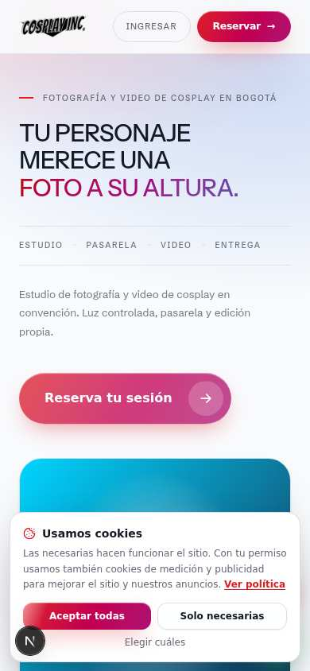
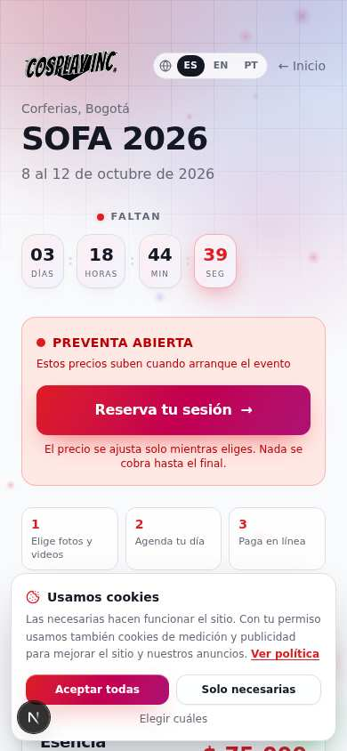

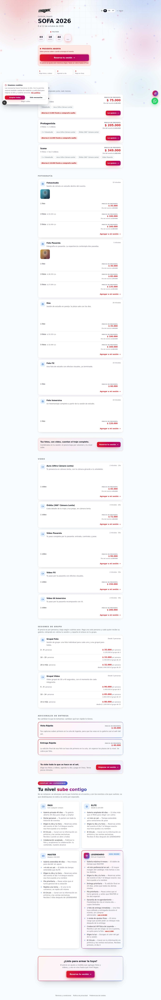

Cosplay Inc · Revisión del 4 de octubre de 2026, cuatro días antes de SOFA
Revisión completa: plataforma y negocio
Revisé la plataforma de punta a punta: arquitectura, funcionamiento, seguridad, buscadores, estética y recorrido del cliente. También revisé el negocio: oferta, precios, canales, mercadeo y publicidad. Este documento dice qué encontré, qué arreglé y qué recomiendo, en orden de prioridad.
1 · Resumen en una página
Una plataforma completa y propia
Venta, agenda, cobro, stand, galerías, entrega, «Para tus redes», proyectos y experiencias en un solo sistema, con pruebas automáticas. Ninguna competencia local en cosplay tiene algo así.
El producto genera su propia publicidad
Cada cliente sale con su Reel, sus formatos para redes, el texto listo y el crédito a @cosplay.inc. Bien usado, es un motor de contenido gratuito.
Todo depende de un evento
Hoy la venta gira alrededor de SOFA. Las experiencias y los proyectos ya existen en el sistema, pero aún no tienen fecha ni precios publicados.
La portada no vende lo nuevo
El inicio habla solo del estudio en convención. Experiencias, proyectos a medida e ideas de poses no aparecen ahí.
- Congelar cambios del 6 al 13 de octubre, salvo arreglos urgentes. Un despliegue en plena venta es el mayor riesgo técnico de la semana.
- Rotar las claves expuestas que siguen pendientes: contraseña de la base de datos, la clave secreta de Bold (la de pruebas también), la clave de sesión y la del stand. Se cambian solo en el servidor, nunca en el chat ni en el repositorio.
- Anunciar Halloween (recomendado: sábado 24 de octubre) para que el QR del stand en SOFA lleve a /experiencias con la lista de espera abierta.
2 · Qué revisé y cómo
- Pruebas automáticas: 263 pruebas de punta a punta, que simulan a un cliente y al equipo usando el sitio, y 308 pruebas unitarias, que revisan reglas, precios y textos. También la verificación de tipos de todo el código, unas 74.000 líneas.
- Seguridad: que cada acción que cambia datos exija la sesión o el enlace correcto, y que lo privado no llegue a los buscadores.
- Buscadores: el mapa del sitio, las reglas para rastreadores y los datos estructurados de eventos.
- Estética y recorrido: capturas en celular y computador de inicio, SOFA, eventos, preguntas, experiencias, poses y la sesión personalizada.
- Negocio: precios y niveles configurados, medición (Google Analytics y Meta), contenido del blog y canales.
Resultado de la batería completa: ver sección 3.
3 · Errores encontrados y arreglados (ya publicados)
| Hallazgo | Impacto | Arreglo |
|---|---|---|
| El espacio privado de cada proyecto (/proyecto/…) no estaba en la lista de «no rastrear» de los buscadores. | Alto | Agregado, junto con el simulador del equipo. Ya tenía la marca de «no indexar», ahora también la regla del rastreador. |
| Las experiencias no estaban en el mapa del sitio. | Medio | /experiencias y cada experiencia anunciada o a la venta entran solas al mapa. |
| Las experiencias no se presentaban a Google como «Evento». | Medio | Cada experiencia lleva sus datos de evento (fecha, lugar, precios y si está agotada), para que pueda salir en el buscador de eventos. |
| Si el cliente de un proyecto dejó solo WhatsApp, nunca recibía la propuesta (los avisos salen por correo). | Alto | Botón «Enviarle su enlace por WhatsApp» en la ficha del proyecto, con el mensaje ya escrito. Al enviar la propuesta, el sistema avisa si el cliente no tiene correo. |
| Ni la lista de espera ni la propuesta aceptada se medían como clientes potenciales. | Medio | Ahora llegan a Google Analytics y a Meta como «Lead». La propuesta aceptada va con su valor, para optimizar campañas. |
| Los correos de «abrió la venta» no ofrecían cómo dejar de recibirlos. | Medio (Ley 1581) | El correo dice cómo darse de baja, y el admin tiene el botón «Quitar» en la lista de espera. |
| Una foto dañada hacía fallar toda la subida de poses. | Bajo | Se salta esa foto, se suben las demás y se avisa cuál falló. |
| Las etiquetas de cada pose salían cortadas en el administrador. | Bajo | Ahora se ven completas. |
4 · Arquitectura
Lo que está bien hecho
- Un solo sistema (Next.js + PostgreSQL) con módulos claros: catálogo y precios en un paquete aparte con sus propias pruebas, notificaciones con bandeja y reintentos, almacén de archivos separado entre lo público (portafolio) y lo privado (clientes).
- El servidor decide el dinero: el navegador nunca manda precios, solo códigos y cantidades. Los totales se recalculan siempre.
- Textos editables desde el admin sin tocar código, y el sitio en tres idiomas.
- Respaldo automático de la base antes de cada despliegue, y despliegue automático al publicar.
- Pruebas extensas: 263 de punta a punta y 308 unitarias, más que la mayoría de sitios comerciales.
Riesgos y recomendaciones técnicas
| Riesgo | Prioridad | Recomendación |
|---|---|---|
| Claves expuestas sin rotar (base de datos, Bold, sesión, stand). | Alta | Rotarlas en el servidor esta semana. Es lo más importante de esta lista. |
| Un solo servidor (VPS) compartido con otras cuatro aplicaciones. | Media | Monitoreo de caída con alerta al celular (un servicio gratuito de «uptime» basta) y una copia de los respaldos fuera del servidor. |
| La verificación automática (GitHub) no compila el sitio ni corre las pruebas de punta a punta antes de desplegar. | Media | Agregar la compilación y un grupo corto de pruebas críticas (compra, pago, galería) antes del despliegue. |
| No hay revisor de estilo de código (ESLint) configurado. | Baja | Configurarlo después de SOFA. |
| Algunos archivos son muy grandes (el de «Para tus redes» tiene más de 2.600 líneas). | Baja | Partirlos en piezas cuando se vuelvan a tocar. |
| Pagos de proyectos y experiencias: el equipo los confirma a mano. | Media | Conectar Bold a proyectos cuando estén las credenciales nuevas. |
5 · Funcionalidad: el recorrido completo
| Etapa | Estado | Observación |
|---|---|---|
| Descubrir (inicio, blog, páginas de tema, portafolio) | Funciona | La portada solo presenta el estudio de convención. El blog tiene 15 artículos, el último programado para el 5 de octubre: después no hay más. |
| Comprar en convención (catálogo, armar, pagar, agenda) | Funciona | Preventa con precio que sube en el evento, niveles PASS → LEGENDARIO por gasto, pago en línea. |
| Operar el día (stand, caja, check-in, ingesta) | Funciona | — |
| Entregar (galería, selección, «Para tus redes», Reel, texto) | Funciona | Es el diferencial más fuerte del sistema. |
| Volver a comprar (postventa, niveles, «¿Ya publicaste?») | Funciona | Los niveles solo se ganan por gasto. La regla «eventos asistidos» (el pasaporte) existe, pero ningún nivel la tiene configurada. |
| Sesión personalizada → «Tu Proyecto» | Funciona | Brief libre, propuesta, aceptación y pago reportado. Faltan precios de varias opciones y extras. |
| Cosplay Inc Experience | Lista, sin contenido | Todavía no hay ninguna experiencia anunciada. |
| Ideas de poses | Lista, sin contenido | Hay que cargar las fotos. |
6 · Estética




Capturas del entorno de prueba: las fotos son de relleno.
- Identidad consistente: el degradado rojo → magenta, la tipografía de titulares y el logo funcionan en todo el sitio. Las experiencias en oscuro y las tarjetas como afiches le dan un aire más premium.
- La portada es muy larga: una fila por cada producto (12 líneas). Las que no tienen material muestran marcos de «Próximamente». En producción, cada fila sin fotos hace ver el sitio sin terminar. Recomiendo agrupar en tres filas (Fotografía, Video, Efectos) u ocultar las vacías.
- Dos lenguajes visuales: el brief de sesión personalizada es oscuro neón y el resto del sitio claro. Funciona como «experiencia privada», pero conviene acercarlo a la estética oscura de Experience para que se sienta de la misma casa.
- En el celular el menú de arriba solo tiene «Ingresar» y «Reservar». Experiencias, poses y proyectos solo se encuentran en el pie de página.
- El aviso de cookies tapa el botón principal en el celular hasta que se responde. Es lo esperado legalmente; está bien que sea compacto.
7 · El negocio: diagnóstico de mercadeo
7.1 La escalera de valor (con los precios configurados hoy)
| Escalón | Producto | Precio de referencia | Papel |
|---|---|---|---|
| 1 · Entrada | Foto Pasarela / Fotoestudio en convención | $30.000 – $40.000 | Primer contacto, mucho volumen. |
| 2 · Subir | Video, cámara lenta, órbita, FX e inmersiva | $45.000 – $200.000 | Ticket promedio; los niveles ELITE ($220.000), MASTER ($340.000) y LEGENDARIO ($600.000) empujan a sumar. |
| 3 · Repetir | Cosplay Inc Experience (temporadas, salidas, campamentos) | Por definir | El hueco más grande: entre $200.000 y $1.300.000 no hay oferta fuera de la convención. |
| 4 · Profundizar | Tu Proyecto (sesión personalizada) | Desde $1.300.000 (20 fotos) | Ticket alto, a la medida. |
Conclusión: el negocio tiene una entrada muy buena y un techo alto, pero le falta el escalón del medio. Ese escalón es el que convierte a un cliente de convención en cliente de todo el año. Las experiencias de temporada son la forma más rápida de llenarlo, y Halloween es la primera oportunidad.
7.2 Posicionamiento
Hoy el mensaje es «estudio de fotografía y video de cosplay en convención». Recomiendo pasar a «la casa del cosplay en Colombia», con tres puertas:
- En tu evento (convenciones),
- Experiencias (eventos propios),
- A tu medida (proyectos),
y una capa de comunidad: poses, blog, «Para tus redes» y niveles. La familia de marcas Studio, Magazine y Experience encaja con eso.
7.3 Canales
| Canal | Qué hacer |
|---|---|
| Instagram y TikTok (el principal) | Publicar los Reels de las sesiones (con autorización), detrás de cámaras, «antes y después» de la edición FX y una «pose de la semana» tomada de Ideas de poses. Cada cliente que publica con @cosplay.inc es publicidad gratis: «¿Ya publicaste?» ya lo empuja. |
| Catálogo de WhatsApp Business con los productos. Listas de difusión con quienes se anotaron a «Avísame» y quienes compraron (solo con su autorización). Respuestas rápidas con los enlaces de reserva y de experiencias. | |
| Crear y cuidar el Perfil de Empresa en Google («Cosplay Inc Studio», Bogotá) con fotos, horario y reseñas: es lo que sale al buscar «fotógrafo cosplay Bogotá». Seguir publicando en el blog: hoy la programación termina el 5 de octubre. | |
| Convenciones | QR en el stand hacia /experiencias (lista de espera) y hacia la galería. Tarjeta con «tu código, tus fotos, tu Reel». |
| Alianzas | Las Cámaras del Dragón (SOFA), maquilladores, tiendas de cosplay y comunidades por fandom, para las salidas. Comisión o beneficio por referir. |
7.4 Publicidad pagada (cuando haya presupuesto)
- Meta (Instagram y Facebook): el sitio ya envía «Compra», «Inicio de pago» y «Lead». Con eso se puede:
- mostrar anuncios a quien vio el catálogo y no compró (retargeting);
- buscar personas parecidas a quienes compraron;
- durante SOFA, mostrar anuncios solo alrededor de Corferias.
- TikTok: impulsar publicaciones de clientes que etiquetan a la marca, con su permiso.
- Google: campañas pequeñas de búsqueda para «fotógrafo cosplay Bogotá» y «sesión de fotos cosplay», hacia la sesión personalizada.
- Regla de oro: medir el costo por venta y por lead con los eventos que ya existen. Lo que no se mide, no se escala.
7.5 Fidelización
- Activar el pasaporte: en Admin → Niveles, poner cuántos eventos asistidos dan cada nivel (por ejemplo, ELITE a los 2 y MASTER a los 4). Así las experiencias suben de nivel aunque el gasto sea menor. Los números los defines tú.
- Preventa para quienes ya compraron y para la lista de espera, antes de anunciar en redes.
- Referidos: «trae a tu crew», con los precios de grupo que ya existen.
- Pase de temporada para Halloween, Navidad y Año Nuevo. Recomendado: tríptico exclusivo + prioridad.
7.6 Legal y confianza
- Revisión de abogado para las políticas de uso de imagen, cancelación y menores, y para los términos.
- Para usar fotos de clientes en publicidad hace falta su autorización expresa. Ya se pide: en convención es una casilla opcional al comprar («Autorizo que mi material se use en redes y portafolio de la marca») y en proyectos es parte de la aceptación. La regla para el equipo: usar en anuncios y redes solo material de quienes la marcaron.
- Reseñas: pedir una reseña en Google con el correo de «¿Ya publicaste?» sube la confianza y el posicionamiento local.
8 · Plan sugerido
| Cuándo | Qué |
|---|---|
| Esta semana (antes del 8) | Rotar claves · congelar cambios desde el 6 · anunciar Halloween · QR del stand a /experiencias · Perfil de Empresa en Google. |
| Durante SOFA (8–12) | Capturar correos y autorizaciones · Reels diarios del stand · anuncios alrededor de Corferias si hay presupuesto. |
| Después de SOFA (13–31) | Entregas rápidas y «¿Ya publicaste?» · abrir la venta de Halloween y avisar a la lista · cargar Ideas de poses · reanudar el blog · presentar las tres puertas en la portada. |
| Noviembre – diciembre | Navidad y Año Nuevo con pase de temporada · activar el pasaporte · Bold para proyectos · primera salida por comunidad · monitoreo y pruebas antes de desplegar. |
9 · Decisiones que necesito de ti
- Fecha, estudio y precios de los niveles de Halloween.
- ¿Agrego a la portada las «tres puertas» (convención, experiencias, a tu medida)? ¿Y «Experiencias» en el menú del celular?
- ¿Agrupo u oculto las filas vacías del portafolio en la portada?
- Cuántos eventos asistidos dan cada nivel (pasaporte).